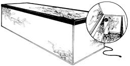

A whole lot of people planted gardens this year, but it's a good bet that most of them don't live anywhere near a farm, to say nothing of owning a root cellar. So how can those folks store such vegetables as squash and turnips and potatoes and the like?
Well, Charles D. Syverson (who some readers might recognize as the coauthor of a little manual on wind energy titled Wind Power) has come up with one answer: a build-yer-own, 24-cubic-foot food storage chest-not a freezer, but a do-it-yourself root cellar-that'll keep vegetables at a constant, thermostatically controlled temperature for months on end.
After some ten years of experimenting, perfecting, and trying out various prototypes, Syverson has come up with the ideal unit for the job and the best way to put it together . . . and he's rendered everything lie knows about the subject into a booklet of plans and instructions so that you, too, can build "a root cellar that ain't".
All you'll need to do the job-once you're armed with Charles' guide-is the inclination, ordinary hand tools, and relatively common electrical and construction materials which cost (according to Syverson's estimate) around $121. (No, that price ain't low . . . but it includes such largeticket items as an air-circulating fan and line voltage thermostat, and the finished chest itself is designed to last a good many years.)
The booklet, entitled (appropriately enough), Complete Plans and Instructions for Making a 24-Cubic-Foot Food Storage Chest, is written and illustrated with rare clarity. Nearly anyone-no matter how fumble-fingered-should be able to put the device together with a minimum of trouble. The plans cost $3.95, and can be ordered by writing Syverson Consulting, 2007 Roe Crest Drive, North Mankato, Minn. 56001.
|
 |
|
|